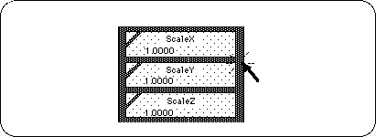
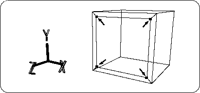

Return to previous page | Return to menu | Go to next page
Next, operate the selected TAG to enlarge the polygon surrounded by TAG.
[Scale] Click the area around the menu with the mouse to highlight the whole area in blue (Figure 2-14).

In this state, the left, middle, and right buttons of the mouse support scaling in the X, Y, and Z directions, respectively (see the bar display at the bottom of the screen).
Here, press and drag left mouse button and middle button at the same time to enlarge the polygon surrounded by TAG in the X and Y directions. (Figure 2-15).

Next, copy and move the polygon enclosed by this TAG to create a “dent”.